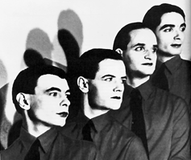
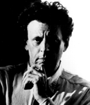
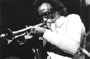
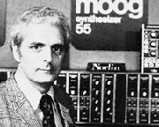
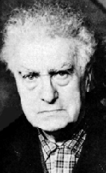
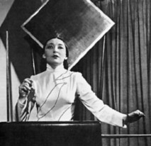
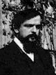

projects // 21·22corporation
| home
projects // 21·22corporation |
the following is an updated version (may 01) of the text from the original pamphlet (aug 95). several obvious mistakes have been corrected, and a few entries have been added or expanded. please note that the bulk of this article was written before the generic term "electronica" took root. "techno" is therefore used in the generic sense.
| |
||
| but what do we really know about techno? we might know that there are certain kinds of techno that we like, whether it be house, breakbeat, drum'n'bass, trance, gabber, electro, ambient, trip-hop, or whatever… but do we really know (or care) where these styles of music came from or how they developed? and why do we even like techno at all? is it the repetitive, trance-inducing beat? is it the cool electronic effects? is it the lure of the substances that some of us choose to use? is it simply because it's the 'cool' thing to do now -- a simple cultural code like the fashion, dances, attitudes, or rituals of any subculture? what makes techno (and therefore raves/house parties/events/etc.) so special, if anything at all? this article is not intended to answer all of these questions. of course there's no room for that! but hopefully you will find some things in here that will stimulate you to make a few conclusions, and maybe find some new connections of your own. there's a lot to know about techno, and even more to say (trust me). well, first off, it must be said that techno is not just 'mindlessly repetitive dance music' made automatically by computers. nor is it just 'kiddie' music, made to listen to while sporting really big clothes. nor is techno the 'bastard child' of rock 'n' roll. techno music, in fact, has a long history that stretches back much further than you might 'think'... | ||
|  K R A F T W E R K 1978 |
techno
did not begin in 1999 with MOBY's ever-present blues/electronica
album play; nor in 1998 with FATBOY SLIM's platinum-selling album
you've come a long way baby; nor in 1997 with DAFT PUNK's funky french
house hit "around the world"; nor with THE BUCKETHEADS' infectious
1996 offering, "the bomb! (these sounds fall into my mind)"; nor in 1995
with JOSH WINK's impossibly squelchy "higher state of consciousness";
nor in 1994 with ARMAND VAN HELDEN's primal house hit "witch doktor";
nor in 1992 with LA STYLE's new beat stomper "james brown is dead;" nor
with MOBY's 1991 hit "go!" or with sheffield's LFO and their bleepy
bass album frequencies,
of the same year;
nor with 808
STATE'S 1990 single, "cubik"; nor
in 1987 with the silky detroit-souled "strings of life" by RHYTHIM IS RHYTHIM
(aka DERRICK MAY) or JUAN ATKINS' paranoiac "no UFO's" (recently
revived for 2000's ford focus commercial); nor in 1984 with NEW ORDER's
coldwave 12" epic "blue monday;" nor with AFRIKA BAMBAATAA's spacey 1982
single "planet rock" (and all subsequent 'breakdance' music, now called
'electro'); nor in 1982 with CYBOTRON (featuring JUAN ATKINS), and their
darker, leaner, detroit-style 'techno bass' music (such as the 1983 single
"clear"); or THE HUMAN LEAGUE's glam/technopop masterpiece album dare;
or even 1981 with KRAFTWERK's bleepy techno-bible, computer world
(KRAFTWERK's own history goes even further back, to trans-europe express
from 1977, autobahn from 1975, and experiments as far back as the
late '60s!). although each of these were very important benchmarks in recent
techno history, there has been a lot of other music which could easily fall
under the category of 'techno,' or 'house,' or 'electronica,' including: · the earlier 'pop techno' of MOBY, ORBITAL, DEEP FOREST, THE ORB, THE MOVEMENT, ENIGMA, BLACK BOX, INNER CITY, THE KLF, and many others... · the early '90s the 'new beat' music of NITZER EBB, FRONT 242, and LORDS OF ACID... |
|
| ·
the harder 'euro' techno of late '80s-early '90s UNDERGROUND RESISTANCE,
JOEY BELTRAM, CYBERSONIK (featuring RICHIE HAWTIN and DAN BELL), belgium's
R&S label, and german labels such as DISKO-B, HARTHOUSE, and PCP... · the seeds of jungle, in the music of MEAT BEAT MANIFESTO and the 'hardcore' drum'n'bass of labels such as SHUT UP AND DANCE, SUBURBAN BASE, and REINFORCED... · the '80s industrial-dance music of PSYCHIC TV, COIL, and CHRIS & COSEY (all ex-members of the seminal '70s industrial group/cult called THROBBING GRISTLE)... · the hi-nrg music of '80s gay dance clubs (whose more 'poppy' contingent included BRONSKI BEAT, THE COMMUNARDS, ERASURE, and the ZYX label)... · the early-mid '80s chicago-style 'acid house' and 'acid trax' music of FRANKIE KNUCKLES, PHUTURE, FARLEY, ARMANDO, ADONIS, and chicago's TRAX & DANCEMANIA labels... · the innovative sampled music of the mid '80s band ART OF NOISE (named after RUSSOLO's 'art of noises'), which is still hard to categorize: some of it was techno/electro, some of it was pop, some was R&B, some was ambient… |
||
J U A N . A T K I N S 1989 |
·
the first techno (so named) by detroiters DERRICK MAY & his TRANSMAT label,
KEVIN SAUNDERSON & KMS, and JUAN ATKINS & METROPLEX (all starting around
1985-87); a music informed both by ALVIN TOFFLER's 'future theory' and a
crumbling city of faded glories and broken dreams... · the 'technopop' of the late '70s-mid '80s: PET SHOP BOYS, FRANKIE GOES TO HOLLYWOOD, NEW ORDER, OMD, SECTION 25, HEAVEN 17, ULTRAVOX, YELLO, GARY NUMAN, DAVID BOWIE, YELLOW MAGIC ORCHESTRA, and many others... and a lot of other music comes awfully close to 'techno' (stylistically or conceptually), including the whole 'new age' movement (whose more prominent music-makers include ROBERT RICH, STEVE ROACH, MARK ISHAM, and the WINDHAM HILL label, among many others); THE B-52's (check out 1982's whammy! if you dont believe it); an assortment of odd european artists including MANUEL GÖTTSCHING (his 60-minute techno-epic e2-e4, from 1981, is essential), JOY DIVISION, MARTIN CIRCUS, LIASONS DANGEREUSES, DAF; 'synth disco' (like GIORGIO MORODER and SPACE's keyboard-driven disco anthems); disco itself (it was the first dance music to be beatmixed, after all); jamaican dub (with KING TUBBY and LEE PERRY's pioneering studio experimentation); and the electronic doodlings of euro 'space rock' (such as CAN, POPOL VUH, CLUSTER, NEU!, and TANGERINE DREAM). if you haven't heard any of these, seek them out to understand! but the roots of techno go much deeper; into areas outside of music altogether…to issues of race (believe me, it DOES matter), gender (why aren't more women really involved in the scene?), economics (capitalism, commercialization, and the economic marginalization of entire cultures -- which, ironically, is often the catalyst for new musical forms), technology (somebody had to design all those keyboards and gadgets), movement, images, mathematics, space travel, psychedelics, academics (and the politics of today's 'classical music' which favors formula and stagnation over innovation and experimentation), anthropology, sociology, psychology, human ingenuity, and so on…a complex web of concerns, attitudes, ideologies, cultures, and experiences. these things are all essential towards a deeper understanding of techno (and all music!)…but for simplicity's sake, let's get back to the music: to the music cultures, inventions, and people who brought us here... · the history of dancing and dance cultures such as the club/rave scene of late '80s england ('88's 'summer of love'); the mid '80s club scene in chicago (especially FRANKIE KNUCKLES' club THE WAREHOUSE, from which 'house' got its name); the mid '70s-early '80s breakdance/hip-hop scene in new york (perhaps the first underground scene to accept a totally electronic music), the '70s 'discotheque' and the beginnings of club culture (in the lounged-out '50s-'60s); the 'sound-systems' of '50s-'60s jamaica ('proto-raves' with turntables, djs, and toasters/rappers); and any number of other dance gatherings from formal ballet to ceremonial rituals... |
|
E I N S T U R Z E N D E N E U B A U T E N 1980s |
·
the 'industrial' scenes of late '70s-'90s europe and north america, whose
apocalyptic, cybernetic visions seemed to signal the end of 'progress,'
and whose music utilized both the primitive and the hyper-technological
as important compositional tools (see THE YOUNG GODS, SKINNY PUPPY, THROBBING
GRISTLE, early CABARET VOLTAIRE, and EINSTUERZENDE NEUBAUTEN -- among others
-- for creative uses of electronics, found noise, sampling, etc…) · the japanese keyboard company ROLAND, whose little 'music boxes' (which came out from 1978-1986 and are called the 101, 202, 303, 505, 606, 707, 808, and 909) are still being figured out and tweaked, way beyond the original intent of the designers… · LAURIE ANDERSON (late '70s-present), whose extravagant multimedia performances in the late '70s-early '80s (such as the epic 1983 work, united states) truly expanded the vocabulary available to electronic composition... |
|
G E O R G E . C L I N T O N 1980s |
· GEORGE CLINTON (early '70s-present), whose 'space funk' ideas from the early '70s-present (which influenced later technophile PRINCE and gave birth to electronic R&B) were the continuation of the long african-american association with space and science-fiction imagery ('the mothership connection'), which serves both as a psychological escape from the reality of a marginalized black existence, as well as a literal 'place' (mental or otherwise) free from the dominant white society, where innovation can flourish (and he doesn't mind being one of the most sampled artists on the planet, either)… | |
B R I A N . E N O early '80s |
·
BRIAN ENO (early '70s-present), who popularized the term 'ambient music'
in 1978 (bedridden and unable to raise the volume on a barely-audible turntable
across the room), and who explored the possibilities of almost totally passive
and environmental music in albums such as ambient 1: music for airports
and music for films (both 1978), not to mention his 'subversive'
production skills (from the TALKING HEADS' remain in light, to U2's
the joshua tree, and more recent works such as wah wah by
JAMES, and outside by DAVID BOWIE)… · STEVE HILLAGE/MIQUETTE GIRAUDY (late '60s-present, now called SYSTEM 7 or 777), who created ambient soundscapes for art installations, including the most influential one which was released as rainbow dome musick in 1979… · the japanese synthesizer virtuoso ISAO TOMITA (early '70s-present), whose electronic versions of classical compositions put the older works in a totally new and exciting context (snowflakes are dancing from 1974 features all DEBUSSY stuff and it kicks)... |
|
|  P H I L I P . G L A S S 1980s |
·
LA MONTE YOUNG (late '50s-present), whose minimalist, droning compositions
set the stage for much of the work of TONY CONRAD, PHILIP GLASS, TERRY RILEY,
STEVE REICH, and MEREDITH MONK (all early '60s- present); later, JOHN ADAMS
and INGRAM MARSHALL (both '70s-present); establishing repetition as a key
compositional motif (sound familiar? and don't forget APHEX TWIN's "icct
hedral," a collaboration with GLASS); while YOUNG's wife MARIAN ZAZEELA
creates ambient light shows that accompany many of his performances… · JAMES BROWN (late 50s-present), 'the hardest working man in show business'; whose raw, driving funk of the '60s was the catalyst for early breakdancing (among other things) and was the major influence on KRAFTWERK (as well as a billion others), and who as a result is probably the most-sampled artist ever… · SUN RA and his ARKESTRA (mid '50s-'90s), whose spaced-out jazz was some of the most innovative and experimental music ever made; whose space get-ups and claim of saturnian origins were a metaphor for the 'otherness' of african-american identity -- an escape to the 'outer realms' of white domination, and a strategy questioning the very nature of 'reality;' and who was also one of the earliest artists (in any field) to use a synthesizer, (the first recorded was a solovox organ, in 1953!)... |
|
|  M I L E S . D A V I S 1970s |
·
MILES DAVIS (late '60s-early '90s), whose seamless incorporation of electronic
elements into the older, improvisatory art form of jazz was surprisingly
organic, showing that electronic sounds could be just as soulful as 'real'
ones (check in a silent way from 1968, bitches brew from 1969,
or inspired albums by his collaborator HERBIE HANCOCK, with THE HEADHUNTERS)... |
|
|  R O B E R T . M O O G early '70s |
·
WENDY CARLOS/ROBERT MOOG (early '60s-present), whose composer/keyboard-designer
collaboration produced deliberately 'synthetic' versions of BACH and BEETHOVEN
(see a clockwork orange from 1971 or switched-on bach from
1968), proving that electronic music could be accepted by the general public
(look in thrift stores for switched!)… · VLADIMIR USSACHEVSKY & OTTO LUENING (early '50s-early '90s), who were the two pioneer US electronic composers of the early '50s (using mainly tapes), and who later established the COLUMBIA-PRINCETON ELECTRONIC MUSIC CENTER in 1958 (with MILTON BABBITT); a crucial nexus for the acceptance of 'serious' electronic music in the academic/composing world, whose well-equipped studio continued to be an important focal point for electronic experimentation for many years… · KARLHEINZ STOCKHAUSEN (early '50s-present), whose large-scale, multimedia events from the late '60s-present are still among the most challenging works ever presented (including a 1994 performance for violin players and helicopters), and whose radical works of the '50s (including 'pure' sinewave compositions such as "electronic study no.1" and the harsh and chaotic "mikrophonie I," for percussion & microphone noise) were among the first to exploit the nearly limitless possibilities of the new music… |
|
|  E D G A R D . V A R E S E late '50s |
·
EDGARD VARÈSE ('10s-early '60s), whose "poéme electronique"
(a 1958 tape manipulation which was the culmination of the composer's entire
40-year career) changed the face of academic music forever, and who throughout
the '20s-'30s composed some of the most influential works of the 20th century;
such as 1931's "ionisation," scored solely for percussion, which had rarely
been explored in western music; and who had also long predicted the 'liberation
of sound' through technology… · the recently-departed IANNIS XENAKIS (early '50s-00s), whose dense, forbidding works were an attempt to fully integrate music with mathematical concepts such as calculus and probability, and who turned the entire process of composition itself on its head by utilizing computers to calculate impossibly complex compositions… · MUSIQUE CONCRÈTE (late '40s-present), a movement begun in france by PIERRE SCHAEFFER and PIERRE HENRY in which natural sounds were recorded onto vinyl or magnetic tape, then drastically manipulated and arranged into compositions, resulting in a collage of the 'real' (strongly presaging digital sampling and the possiblities of today's technology)… |
|
J O H N . C A G E 1950s |
·
JOHN CAGE ('30s-early '90s), whose influence is hard to underestimate, opening
western composition to zen ideals such as arbitrariness and chance (such
as 1953's "4.33," which is 'performed' by a pianist who simply sits silently
at a closed piano for 4 minutes, 33 seconds…so the ambient noise of
the audience is the composition); whose 'prepared' pianos -- created
by placing unusual objects under the mallets of a normal piano -- allowed
one keyboard to have many different, percussive sounds ('proto-samplers,'
in a way), and who experimented in the '30s and '40s with variable-speed
tape players and amplification…not to mention his many other unusual
musical ventures (often in the spirit of dada and 'serious' fun); such as
the use of ordinary objects as instruments: flowerpots, electric buzzers,
blenders, radios, spoons, etc (inspired in turn by RUSSOLO's futurist "art
of noises" and ANTHEIL's 'junk' compositions of the '20s)... · MAURICE MARTENOT ('20s-'70s), whose eerie-sounding electronic instrument (called the ondes martenot) was the most widely accepted early electronic instrument, and now has vast repertoire of compositions (including several important pieces by OLIVIER MESSIAEN)... | |
|  C L A R A . R O C K M O R E 1950s |
·
LEON TERMEN ('10s-'90s), whose own electronic instrument, invented around
1919, (called the theremin, controlled by subtle hand motions in
the air), was the first electronic instrument to be readily used by composers.
by the 30s and 40s, CLARA ROCKMORE ('30s-'90s) had become the premier theremin
virtuoso, but the severe difficulty of playing the instrument relegated
it to 'spooky' sounds for horror and science-fiction movies: among the best
including forbidden
planet (featuring the first all-electronic score, by LOUIS & BEBE
BARRON), and lost weekend (1948, by MIKLOS ROSZA); all before being
rediscovered by a smattering of artists throughout the decades (including
BRIAN WILSON, JOHN SPENCER BLUES EXPLOSION, and others)… |
|
L U I G I . R U S S O L O 1910s |
·
LUIGI RUSSOLO (1910-20s), the italian futurist painter who wrote an explosive
pamphlet called "the art of noises" in 1913, championing the musical use
of all sounds heard in our increasingly-industrialized and noisy world… · ERIK SATIE (1880s-1920s), whose eccentricities and sense of humor were intended to mock the seriousness of academic music (with titles such as "disagreeable impressions" and "flabby preludes"), and whose later "furniture music" pieces (1920), were meant to be played in the background and simply ignored (predating ENO's 'ambient music' by 58 years)... · ARNOLD SCHOENBERG (1890s-1950s), a german composer who didn't use electronics at all, but who turned to the do-re-mi-fa-so-la-ti-do of the diatonic scale inside-out (it had been used and exhausted by western composers for nearly 200 years); replacing it instead with a system of twelve tones that do not 'rest' in any key and still sound harsh to western ears; all of which unwittingly opened the door for the exploration of non-western scales (such as those found in the indonesian gamelan and japanese flute music) and the atonality of noise music… · FERUCCIO BUSONI (1890s-1920s), a visionary italian composer who predicted this whole thing, writing in 1907: "exhaustion surely waits at the end of a course the longest lap of which has already been covered [ie, traditional tonality and instrumentation]…in what direction does the next step lead? to abstract sound, to unhampered technique, to unlimited tonal material." hmmm… | |
|  C L A U D E . D E B U S S Y early 1900s |
· CLAUDE
DEBUSSY (1880s-1910s), a french composer who didn't use electronics either,
but whose use of arbitrary key changes, impressionism, and dissonance
unchained music from traditional european tonality and set the stage for
everything from ambient music, to bad film scores… the origins of techno and electronic music, then, lie deep in the hearts and minds of humanity; the way we interact with our environment, the way we interact with each other, and especially, the way we shape and improve our world through technology. and so much more has happened! this article barely scratches the surface… look for other connections…other
tangents…such as: | |
C L A U D E . Y O U N G 1995 |
so
find out about the new composers (mine are biased...find you own!): DAN
BELL (DBX), ROBERT HOOD (M-PLANT), JEFF MILLS, "MAD" MIKE/UNDERGROUND RESISTANCE,
DAN CURTIN, MORGAN GEIST, TODD SINES (.XTRAK/ENHANCED), REINFORCED RECORDS,
A GUY CALLED GERALD, JOSH WINK, JOEY BELTRAM, JUAN ATKINS, TITONTON DUVANTE,
BASIC CHANNEL, RICH RATVASKY (IHANNOA), CLAUDE YOUNG, RICHIE HAWTIN, MOONSTARR,
DJ RAP, CHARLES NOEL (MONOCHROME), STEPHEN HINDMAN (KINGsIZE), DAC CROWELL,
THE BLACK DOG, SHAKE, GLOBAL COMMUNICATIONS, CARL CRAIG, OCTAVE ONE, PLAID,
DAVE ANGEL, KENNY LARKIN, AUTECHRE, JAMIE HODGE, PRAXIS RECORDS, ECTOMORPH,
BETA BODEGA COALITION, and so on, and so on…too many to mention! explore
their works, even if only through a mix CD or mp3… so, in conclusion, if you have read this entire thing and have gotten something out of it, i hope it will bring a smile to your face the next time you are listening or dancing to this 'mindlessly r epetitive' music. you are part of something bigger which has been going on for quite some time... 'we are the music makers, and we are the dreamers of the dream...' --eluna@ele-mental.org thanks to TITONTON DUVANTE and ANDREW TWEED for the state of mind; special thanks to DAC CROWELL, without whose music and encouragement this might not have been written; shout outs to MASSIVE MAGAZINE (RIP); and to BRENDAN GILLEN and ERIC IVERSON, who read the original and suggested some additions...mad props. |